Nature And Wilderness Club, 2025, WLH
Animals & plants along Lung Fu Shan Waterfall
Reptiles
Oriental house gecko
原尾蜥虎(Hemidactylus bowringii)
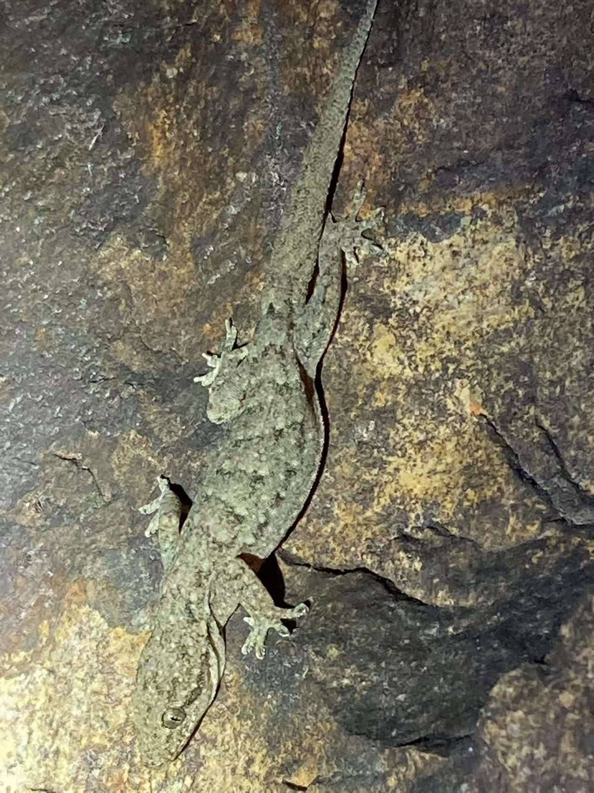Very common gecko. Can be found along roadside railing and on concrete wall. You can find some individuals with fat tails. This is because the gecko can store nutrients in its tails (and therefore dropping a tail is very expensive for a gecko! It is trading its fat storage for its life. Do not try to grab it or it may drop its tail). Additionally, you could tell if a tails is regenerated by examining the color difference between the body and tail. A regenerated tail often has different color and patterns than the body. The best place to find them is walls underneath lamp. There is a passenger walkway by Pok Fu Lam playground where there are many geckos waiting for bugs under lamp at night. The aggregated geckos would attract their predators, such as wolf snake in the genus Lycodon. You can find their eggs in empty drainage pipes.
Oriental house gecko
中国壁虎(Gekko chinensis)
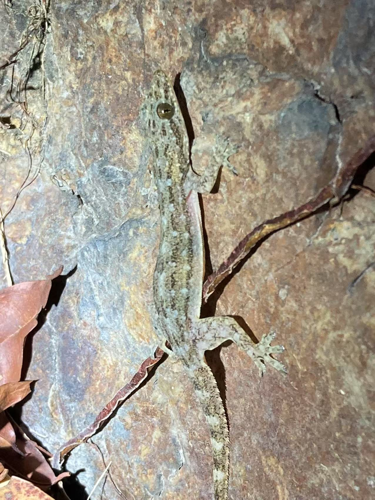Also very common in HK. You can tell it apart from Oriental house gecko by the jagged side edges of its tail. Its habits and preferred habitats are similar to that of oriental house gecko.
Chinese narrow-disked gecko
中国壁虎(Hemidactylus garnotii)
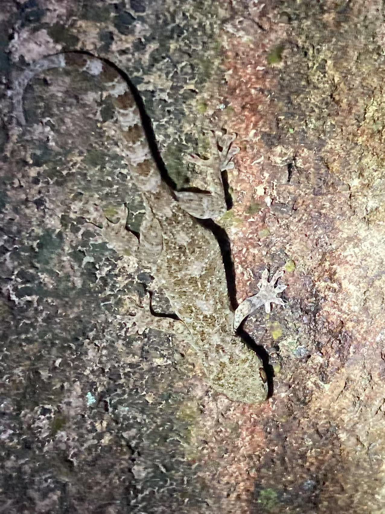Somewhat less common (but still quite common). Larger than the two house geckos and have more slender tail. Will bite and throw excrement when handled (so do not handle it plz).
Chinese water skink
中国棱蜥(Tropidophorus sinicus)
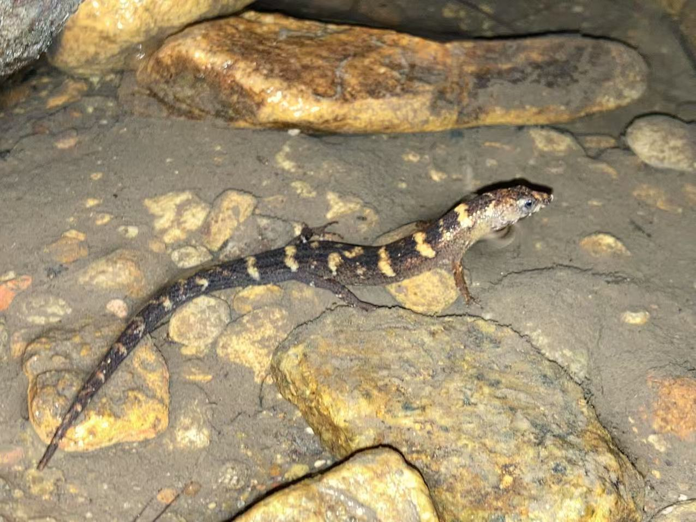A small lizard that could be found near the water. Would jump into stream to hide when disturbed. This species is not too common in the region, but could be found more often in new territory.
Chinese water dragon
长鬣蜥(Physignathus cocincinus)
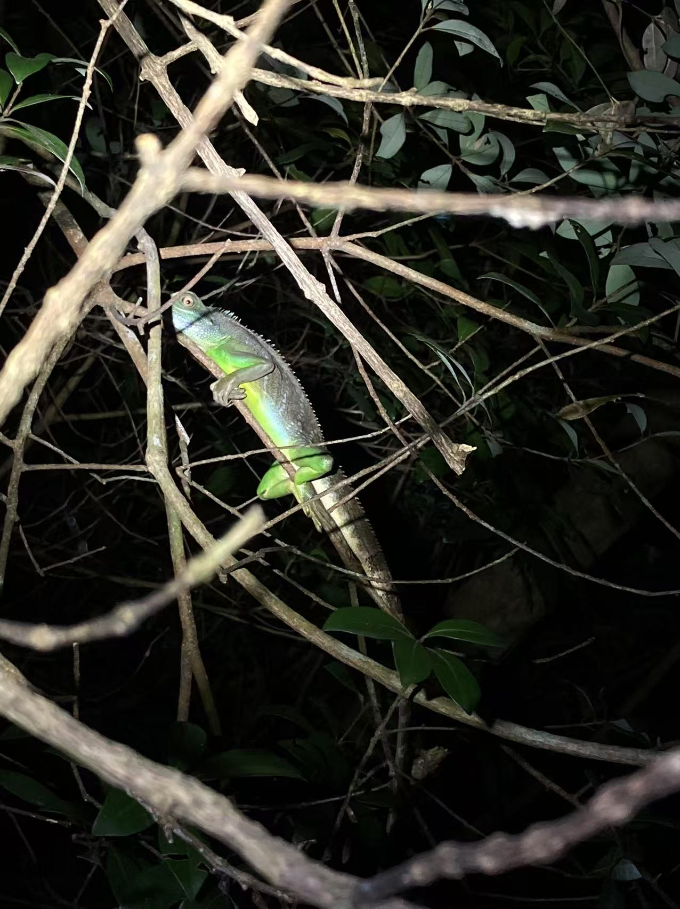A large lizard exceeding 1m in total length. During daytime, the species is very alert to human disturbances and hard to spot (will run away before it is seen!). It can be found sleeping on branches at night, when it is less active and may be closely inspected. However, if disturbed at this time, it will hop off the branch and run off. (so plz do not disturb it) (although it is difficult to see one on the route we will walk lol)
Amphibians
Hong Kong Cascade frog
香港湍蛙(Amolops hongkongensis)
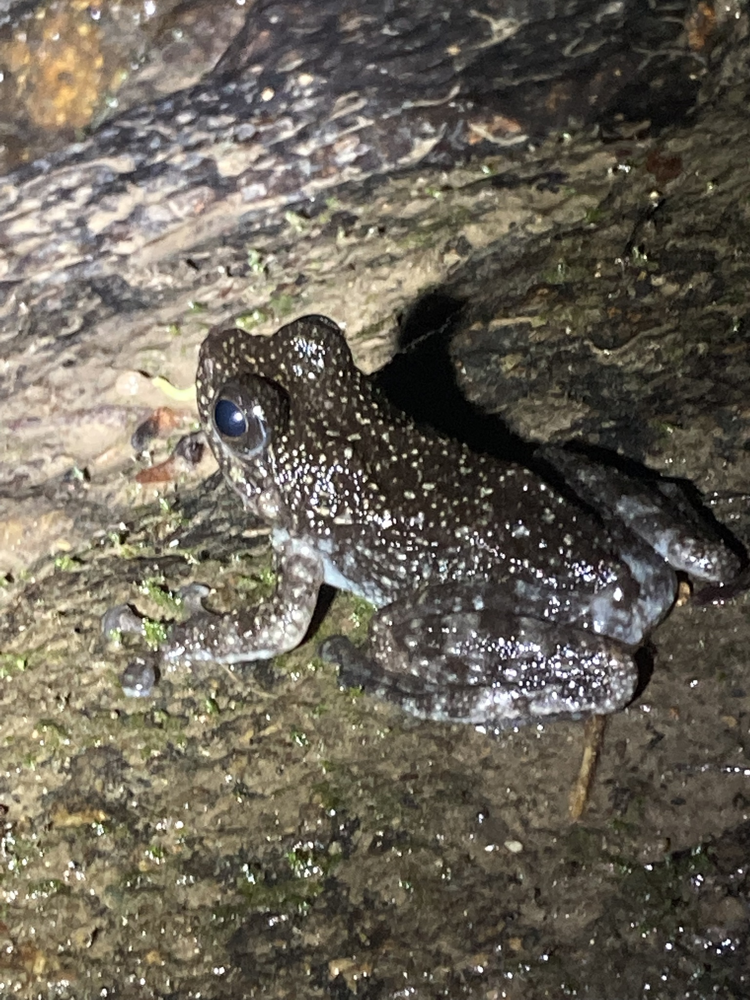One of the most iconic amphibian species in Hong Kong. It is endemic to the region and can be found perching on wet rocks near waterfall. Its enlarged toe pads ensures a firm grap upon the slipper rocks. You don't have the toe pads so please be careful when approaching them near waterfalls (I have slipped more than once before). It is an endangered species (source: IUCN red list). Please do not try to disturb or handle them.
Asian common toad
黑眶蟾蜍(Duttaphrynus melanostictus)
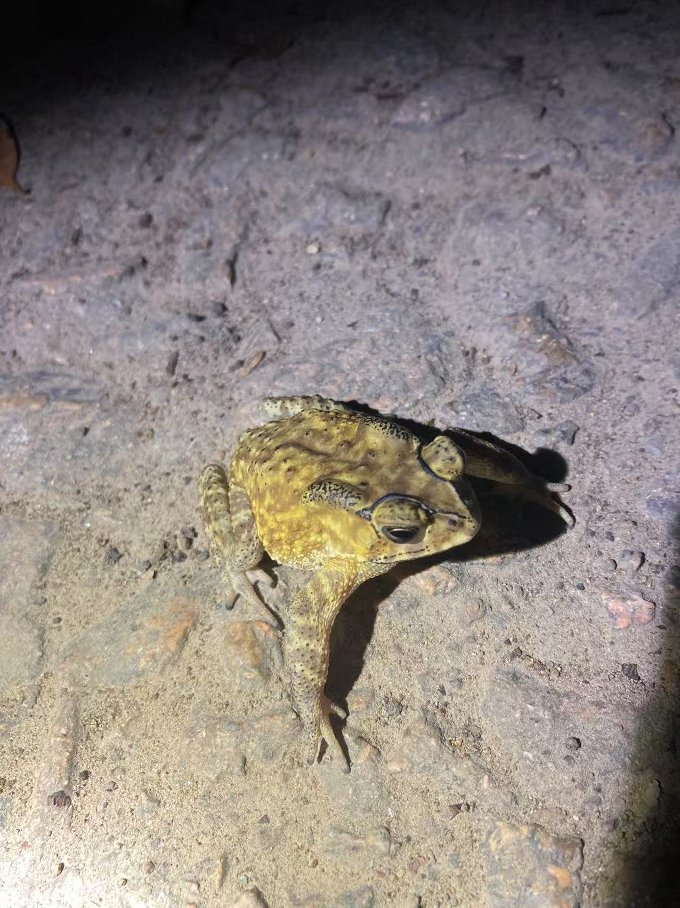Very very common. Poisonous and can produce toxic excretion via skin when it is stressed. You might try to touch it (many individuals are very calm) (but still not recommended as it scares the toad), but ensure that you have no sun lotion/whatever man-made chemicals on your hands to protect the toad. Wash your hand after touching it. The Chinese name refers to the black rings around its eyes. Some individuals have distinct black rings, while others may not have very distinct rings.
large odorous frog
大绿臭蛙(Odorrana graminea)
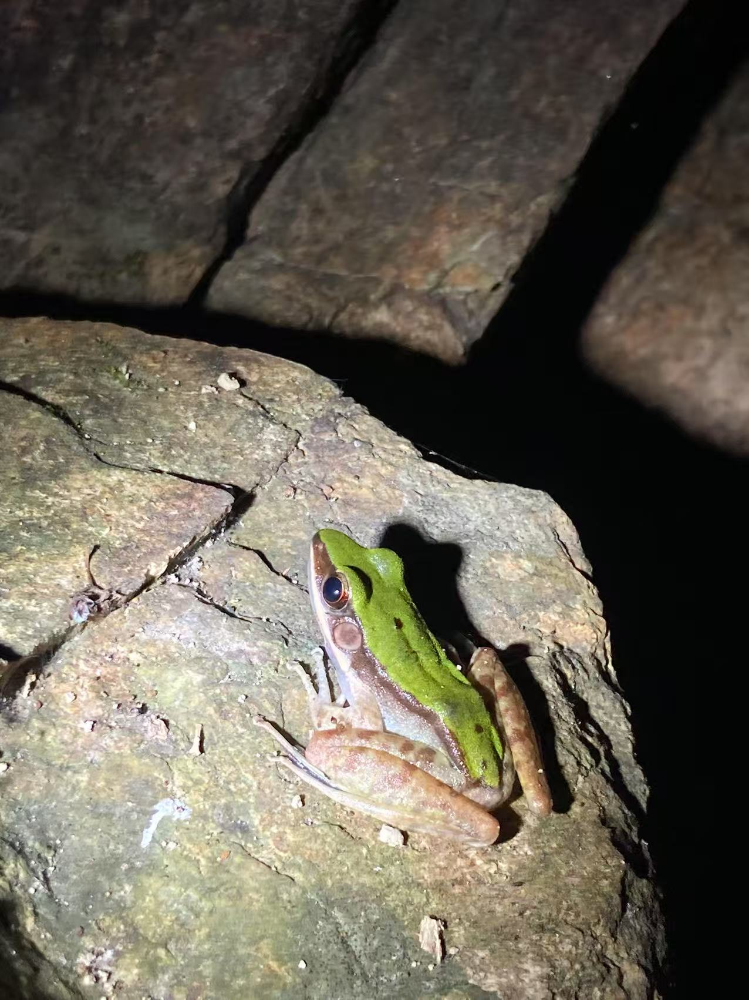Common. Can be found on rocks along streams. Agile hoppers and can jump quite far when disturbed. Chirping high-pitched and sounds like some birds.
Lesser spiny frog
小棘蛙(Quasipaa exilispinosa)

Very common. Can be found on rocks or floating near water edge most of the time. When disturbed, it would jump into water and hide among sediments.
Greenhouse toad
温室蟾(Eleutherodactylus planirostris)
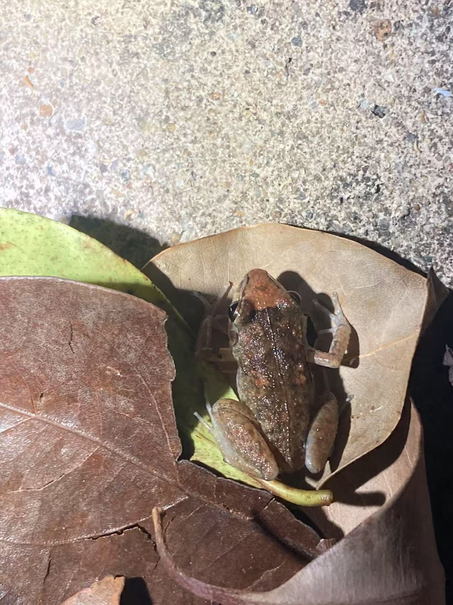Originated in Central America, it is an invasive species in Hong Kong. The species has unusual reproduction strategy. Their tadpoles develop within eggs and emerge as juvenile frogs.
Fish
Flat-headed loach
平头岭鳅(Oreonectes platycephalus)
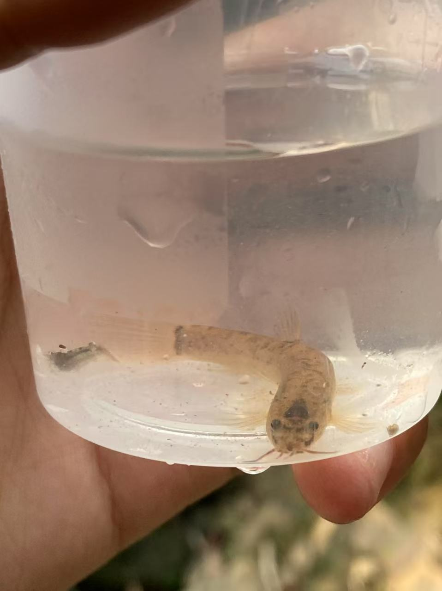A common fish found near the waterfall.
Striped stone loach
横纹南鳅(Schistura fasciolata)
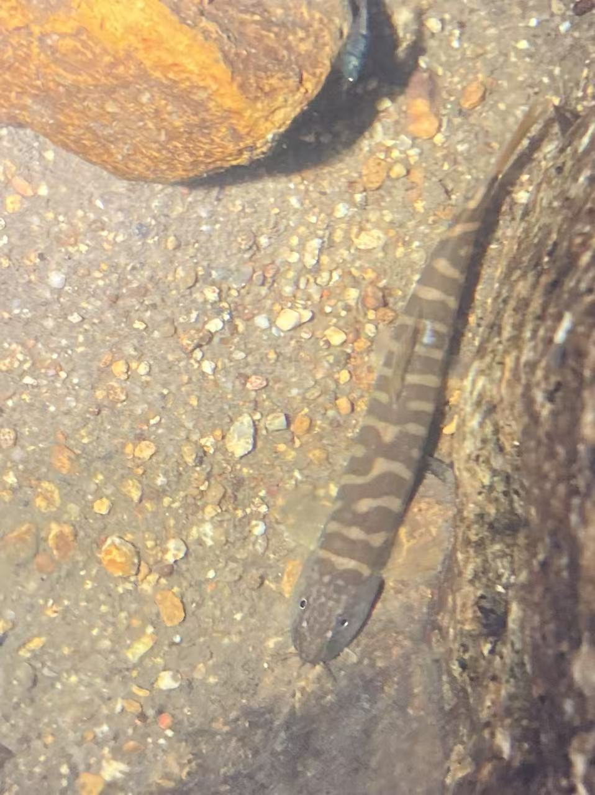Very common fish near the waterfall.
Arthropods
Hong Kong South Sea Crab
香港南海溪蟹(Nanhaipotamon hongkongensis)
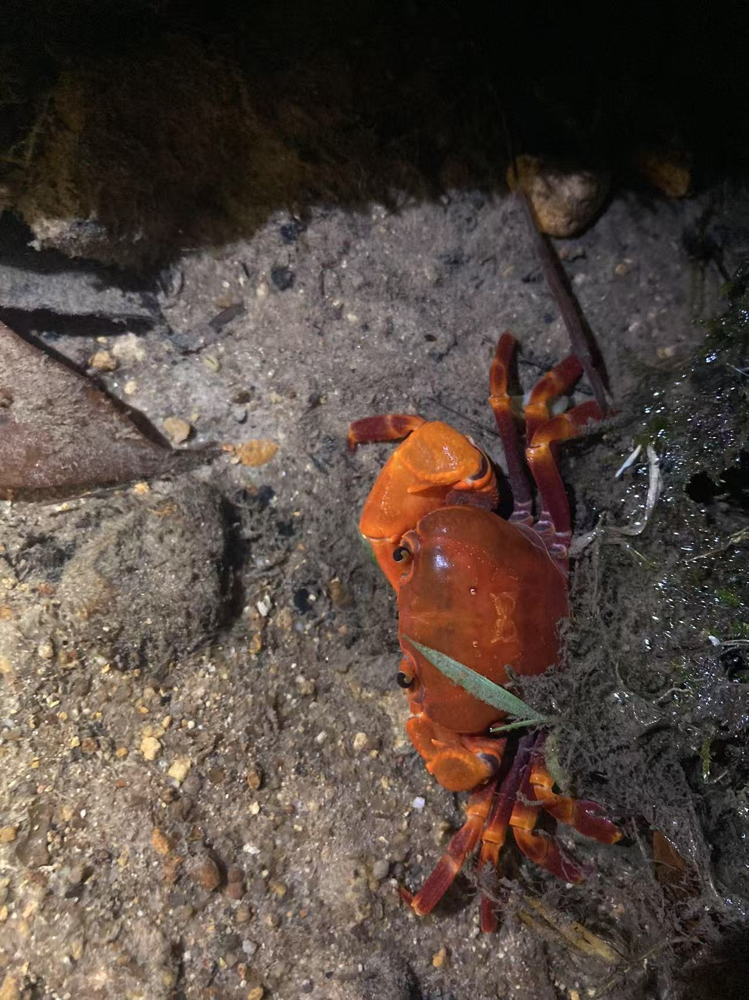 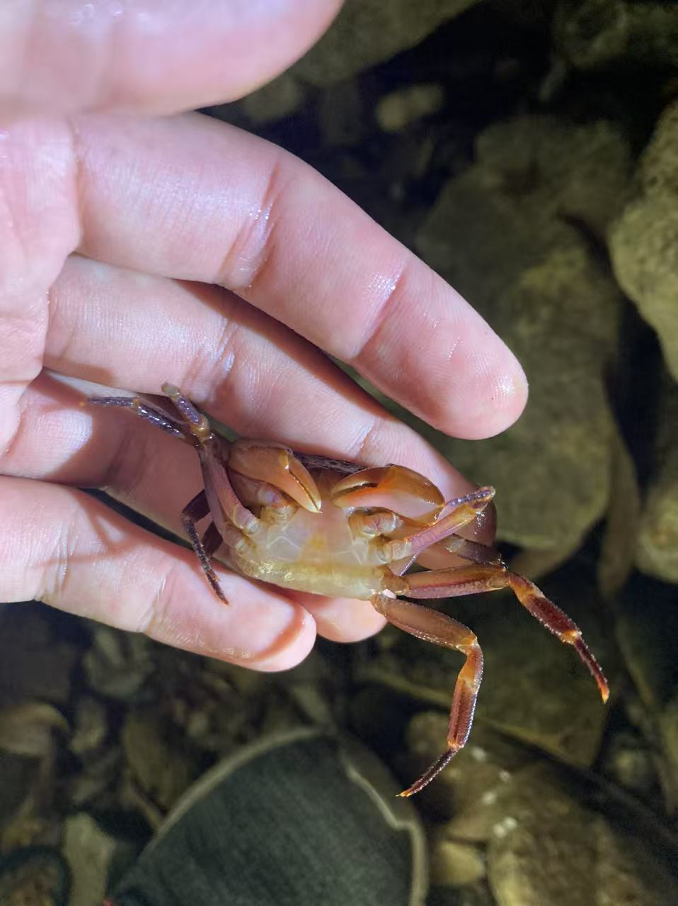A very common freshwater crab in Hong Kong's mountains. It is endemic to Hong Kong and some nearby Guangdong regions. This species prefers clear streams covered by trees. The color is variable, from grayish-brown to bright red. They have assymetric claws, and the phenomenon is most pronounced in males (said to help attract mates, though seems to have no experiment evidence to date). In Shenzhen, the species is quite rare due to habitat loss and poaching (so do not try to buy a freshwater crab in fish market, as most individuals are wild-caught). There is another cogeneric species, N. aculatum in Hong Kong. This species is rarer and cannot be found on HK Island. You can find them in New territory, and can tell them apart from N. hongkongensis by their blue-ish hue.
Golden tree ant
紫荆华丽蚁(Paratopula bauhinia)
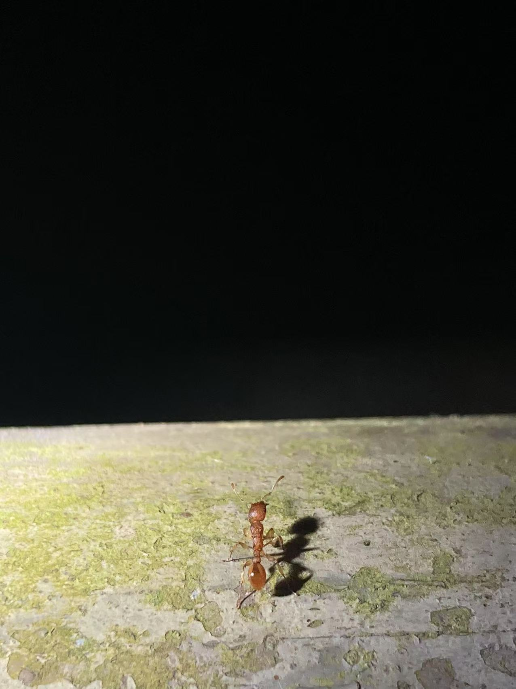A somewhat rare species and endemic to Hong Kong. Can be found along railing at night. The species is arboreal (dwelling and foraging on trees). It is named by HKU's researchers in 2016.
Water striders
水黾/黾蝽(Superfamily Gerroidea)
Very common insects foraging on water surface for any fallen insects.
Caridina shrimp
米虾（属）(Caridina)
Very common shrimps near the waterfall. You're almost guaranteed to see many individuals at night busy foraging for algae on rocks.
Plants
Common swamp pitcher plants
猪笼草(Nepenthes mirabilis)
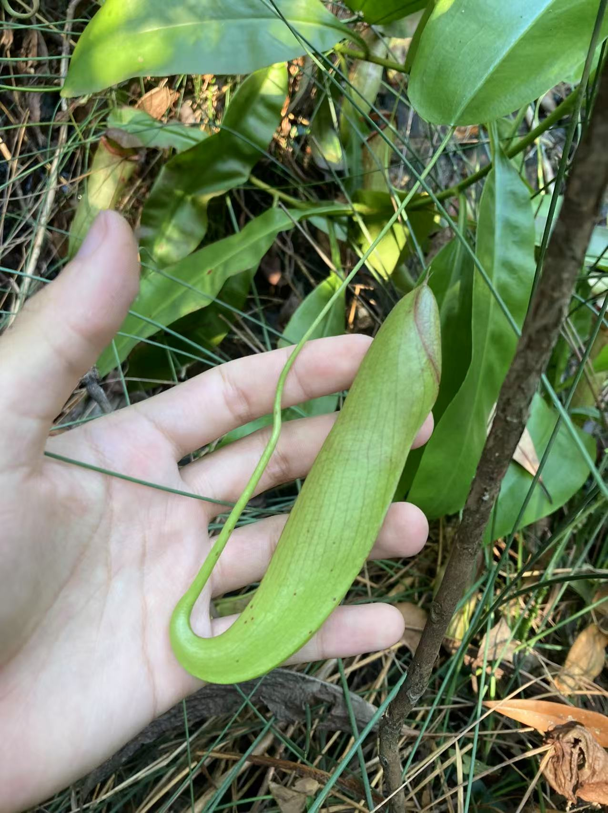 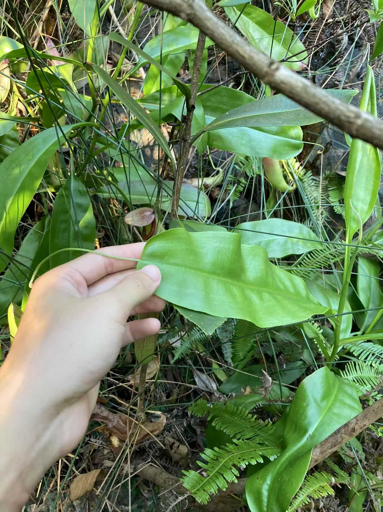You can find this species growing by the waterfall. The pitchers sometimes house some mosquitoes larvae.